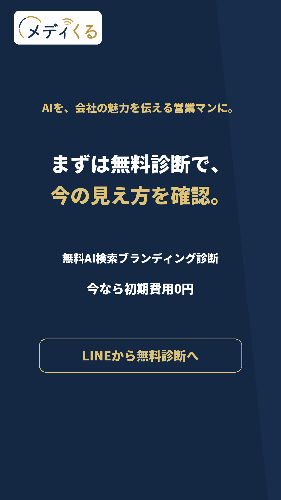

説明動画04 · 完成動画91秒 · 冒頭の声とロゴを反映
冒頭の一言と、正式ロゴを反映。
「もう広告費はかけたくない」を強く言い切る声で追加。全編の声とテンポをそろえ、全編91秒の完成MP4です。
旧版（比較用）
冒頭のつながりと抑揚を整えた完成動画
冒頭：「もう広告費はかけたくない。それなら、AIを24時間365日……」へ自然につなぎ、ひと続きのナレーションで抑揚とテンポを調整しました。「この会社に頼みたい」を含め、全編の声とテンポを統一した91秒版です。
静止画2案と動画5本の変更後を確認できます。単独2本はご指定の加工済み動画、対談2本は再選定した会話を使用。説明動画には冒頭の声と正式ロゴを反映しました。
もう広告費をかけたくない。
令和時代は広告費ではなく、AI検索ブランディングでの集客へ
「もう広告費はかけたくない」を強く言い切る声で追加。全編の声とテンポをそろえ、全編91秒の完成MP4です。
ご指定の加工済み動画を、65.833秒すべて使用。字幕・声・速度も保持しています。
ご指定の加工済み動画を、65.833秒すべて使用。字幕・声・速度も保持しています。
元の加工・字幕・音声を保持イラストと補足文を外し、集客への新しい訴求を表示。
編集見出しは話者の発言と区別LINEから無料診断へ。今なら初期費用0円。
元映像の余韻0.4秒と既存CTA6秒を追加ご指定の映像を途中で切らず、全編使用しています。元の音声・速度・字幕を保持。
ご指定の加工済み動画を、51.333秒すべて使用。字幕・声・速度も保持しています。
ご指定の加工済み動画を、51.333秒すべて使用。字幕・声・速度も保持しています。
元の加工・字幕・音声を保持イラストと補足文を外し、集客への新しい訴求を表示。
編集見出しは話者の発言と区別LINEから無料診断へ。今なら初期費用0円。
元映像の余韻0.4秒と既存CTA6秒を追加ご指定の映像を途中で切らず、全編使用しています。元の音声・速度・字幕を保持。
質問「良さは？」から、信用・ニュース掲載・PRとの違いまで、26.5秒の会話を連続で切り出しました。
質問「良さは？」から、信用・ニュース掲載・PRとの違いまで、26.5秒の会話を連続で切り出しました。
元の発言・声・速度・字幕を保持イラストと補足文を外し、集客への新しい訴求を表示。
編集見出しは話者の発言と区別LINEから無料診断へ。今なら初期費用0円。
既存のCTAと基本デザインを保持会話は途中をつながず、連続した区間を使用。元の音声・速度・字幕を保持しています。
信用を検索する場面から、第三者記事とホームページ・LPとの違いまで、27.74秒の会話を連続で切り出しました。
信用を検索する場面から、第三者記事とホームページ・LPとの違いまで、27.74秒の会話を連続で切り出しました。
元の発言・声・速度・字幕を保持イラストと補足文を外し、集客への新しい訴求を表示。
編集見出しは話者の発言と区別LINEから無料診断へ。今なら初期費用0円。
既存のCTAと基本デザインを保持会話は途中をつながず、連続した区間を使用。元の音声・速度・字幕を保持しています。



単独・対談4本は、前案の無料診断への締めを維持します。説明動画の締めは現行完成版のままです。
見出し：大手ネットニュースの信頼を、AI検索へ。
説明：正式なニュースを土台に、第三者メディアとAI検索の特許技術を活用。
既存の正式画像・動画は上書きしていません。広告設定・公開・予算・計測・リンク先の変更は行っていません。